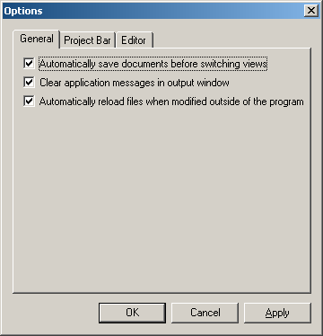

- Save documents before switching views - Check here if you want to save the file (if it was modified) before switching views (e.g. from Source View to XML Tree View).
- Clear messages in Output Window - Check here if you want to clear the old messages in the Output Window.
- Automatically Reload Files - Check here if you want to reload the file if a change has been detected outside the program.
Below is a screenshot of the General Tab in Options Dialog:
